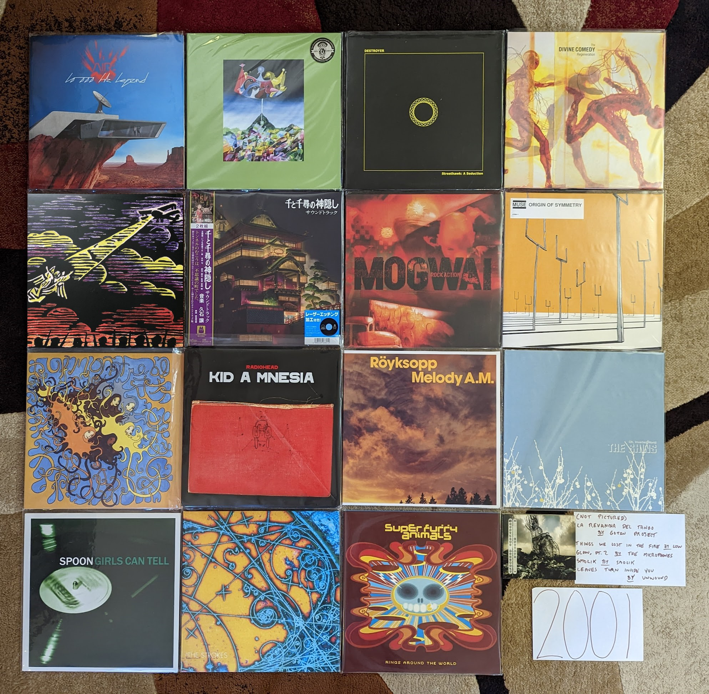

2001¶
From here on out, since I am working backwards through time on this project, my favorite albums will be highly decoupled from the music I was listening to at the time. I guess I’ll have to consider each separately and note the limited overlap when it happens.
What we have below is a combination of 90s alternative holdovers, a few early 2000s indie classics, some atmospheric instrumental music, and an anime film soundtrack. I don’t know that I could have intentionally captured the spirit of the time better if I had designed a set of records to intentionally do so. This is often thought of as “the year the indie broke” and that is very much true. It is also very true that there were bands on both sides of the Atlantic that that were already very active and influential that would later get lumped into the indie scene as it progressed. While this was the year that the post-punk revival started, the roots for many of the threads that would make up the indie sound of the new millennium were already in place.
It is remarkable to think about how different music consumption was in the physical media era. This was the year that my music collection overflowed what I called “the first 400”. In the CD era there were a number of changer/cartridge based methods that provided access to more than a single album at once, and I invested in two huge, 200 CD carousel changers stacked up in my home hifi to provide me the ability to cycle though the entirety of my collection. Thanks to the salary afforded by my internship, and the bulk pricing of the BMG and Columbia House Music Clubs, it didn’t take long for me to outgrow the limits of this setup. It was also becoming increasingly inconvenient to shuttle discs back and forth to my State College apartment. When I returned home for a visit, on the evening I drove back to school I would pick out a new set of discs to bring back with me. I had a database of my collection and their positions in my CD changers that I would print out and use to pull discs and transfer to one of two huge leather bound CD wallets for transport.
The database I used to orchestrate CD pulls would go on to become a chronological account of the albums I acquired between the years of 2001 and the end of the CD era (c. 2011). I still have a version of this today as a Google Docs spreadsheet, and it was an invaluable resource in compiling the lists for this project. The “First 400” was not logged chronologically, but instead was sorted alphabetically into two bins of “classic rock” and “contemporary music”. It serves as a time capsule of the music of my youth. It also frustrated me that in the streaming era that I didn’t have the same kind of accounting of the music I was listening to. This was a primary inspiration for what I am doing here.
In 2001, I also bought by first MP3 player. A Nike branded product made by Diamond Media (remember those guys?) targeted at runners. I always dreamed of having my music collection with me on my runs, and this device finally made that a reality. I remember standing in Best Buy deciding between the Play 60 and the more expensive Play 120. I splurged on the higher capacity unit, because the 64 MB on offer (over 32 MB) would give me a chance of fitting a single album at the then standard 128 mbps encoding rate. Up to this point, MP3s were a way to sample music. This would be my gateway to encoding my physical collection as MP3s, and a migration to digital media as a primary means of consumption.

None of the records below were ever transferred via USB 1.0 proprietary connector into the 64 GB of flash memory on that Nike branded device. Nor do any have the honor of being in the “First 400” that lived inside those giant jukebox changers.
{kind=link}
10,000 Hz Legend by Air - A fairly big change-up from what had come before. There is some of the chill lounge electronica we had come to know, but there now are vocals and more upbeat tracks. A very fuzzy and psychedelic sound that is an all around more difficult, but rewarding listen. [Memory: After I warmed up to their first record, I sought out downloads of the key singles off of this the latest record (using the services of the day). It made me curious to buy the full record from Columbia House, but I didn’t like it at first. These guys were an acquired taste for me apparently.]
Circulatory System by Circulatory System - It is a return back to the brighter, poppier sound of the first Olivia Tremor Control record. Not quite as consistent as the albums from that project, but still a solid bit of highly layered psychedelic low-fi. [Memory: My vinyl copy was bought after the successful Kickstarter campaign in 2019. What a time to collect obscure music.]
Streethawk: A Seduction by Destroyer - Probably my favorite of the New Pornographers side-project albums. He makes good use of his pop-folk skills without giving into the schmaltzy cheese that would typify his later works. A fine indie-pop record. [Memory: I discovered this during the eMusic era (c. 2006) when I would download a mess of records every month on review/reputation alone. In this case I at least knew I liked his main band.]
Regeneration by The Divine Comedy - A total outlier, and perhaps the weakest in his catalog. The best song here, “Perfect Lovesong” follows the standard conventions of the artist, but the rest are dominated by the participation of Radiohead’s producer. It is still an enjoyable record, but somewhat second tier. [Memory: Due to the reputation this was the last of his records I engaged with. In fact, I only really gave it a shot when the reissue series was released in 2020.]
The Earth is Not a Cold Dead Place by Explosions in the Sky - This debut is remembered as much for being release on September 11, 2001 as it was for its content. Like the other new records released that Tuesday, it wasn’t really paid much attention at first. Like everyone I came back to it after the huge success of its follow-up and the “Friday Night Lights” soundtrack. This is a moodier, heavier affair that is at least as good as the far more famous and celebrated work that came next. [Memory: These guys have a very consistent sound, and two records is all I need of this. I event get those two records mixed up. I put the wrong one in the picture above and had to photoshop it. Can you tell?]
Epitaph by Front Line Assembly - By the beginning of the 21st century these guys were now making straight up dance music. It was industrial goth dance music, but definitely made for the club. The ambient world music sounds of their side project Delerium were also starting to leak into their primary act. This has their absolute finest track in “Decoy” which almost feels like a summary of every great thing they had done to this point. [Memory: One of the first things I ever bought online was my CD copy of this that I got from Overstock.com for about 4 bucks.]
La Revancha Del Tango by Gotan Project - A really cool modernization of Tango music that adds samples and electronics. A very French kind of music that has supplied countless gynmasts with their floor exercise music. [Memory: This was given to me on a CD-R by a friend in 2002. I’ve enjoyed it for the last 20 years, but I had to lookup who the band even was to write this entry. ]
Spirited Away Soundtrack by Joe Hisaishi - A remarkable score for a remarkable film. The piano based introduction to the film “One Summer Day” does an amazing job setting the stage for this mysterious, imaginative fantasy film. The eerie soundtrack to the famous train journey, “The Sixth Station” is the definitive statement by the composer. The timeless art of Miyazaki and Hisaishi are forever linked. [Memory: I didn’t see any of the Miyazaki films until I was 40 years old. I felt like I missed out on so much never having seem the movies or heard this wonderful music as a young person.]
The Things We Lost in the Fire by Low - A somber record filled with gorgeous vocal harmonies. The depressing title sets the mood well for this highly affecting record. [Memory: I came in contact with these guys while doing a genre study of “slowcore” around 2006. While the genre mood fits in with that scene, the soaring vocal harmonies go somewhere else entirely.]
The Glow, Pt. 2 by The Microphones - A record that manages to be quiet in a very menacing way, with intermittent bursts of loud noise. “I am Bored” is one of my very favorite songs. [Memory: One of those albums that was highly ranked on RateYourMusic, that I could finally try out once I had eMusic buffet pricing.]
Rock Action by Mogwai - My favorite record by these guys is their most stylistically diverse. We have a lot of the guitar heavy crescendo rock they pay the bills with. We also have a stunning Welsh ballad “O I Sleep” and the orchestrated ambience of “Take Me Somewhere Nice”. [Memory: One of the first things I did when I got eMusic, was sample a bunch of the most famous post-rock albums. This was the first one I connected with.]
Origin of Symmetry by Muse [2001 Favorite] - Their second record is still their finest. The perfect mix of guitars and synths, and soaring falsetto vocals. So completely over the top, it manages to somehow avoid sounding ridiculous. Delightfully heavy music. [Memory: After connecting with their third record I sought out the much hyped album that had come before, but discovered that it was never released here. For a couple years I looked at import listings for the record online, but didn’t get my own copy until the proper WB release in 2005.]
Coquelicot Asleep in the Poppies… by Of Montreal - The last of the early lowfi psych records before this bedroom project became a full band. Loosely a concept record, but the real focus here is the quirky pop songs and layers upon layers of sound. Also the last record with the childlike whimsey before Kevin Barnes went in a much more adult territory. [Memory: This is one of the very first vinyl reissues I remember being very excited about, when it was released by Polyvinyl in early 2009.]
Amnesiac by Radiohead - One of my strongly held, unpopular opinions is that this is far better than the much loved Kid A. While the prior record at times became lost in meandering instrumentals, this one finds the perfect mix of songs and ambient interludes. Several of their greatest songs are here, particularly “Pyramid Song”, “You And Whose Army?”, and especially “Knives Out”. This might be my favorite of their records. [Memory: I listened to this on repeat while I assembled my first self-built PC in the fall of 2006.]
Melody A.M. by Royksopp - Somewhere between chill and dance electronic, these guys found a new sound. They would never make another record quite like their debut again, and this is probably still their finest statement. [Memory: I became aware of them when I bought a discount chill music box set at Best Buy that included the track “Eple”.]
Chutes Too Narrow by The Shins - Almost an indie cliche at this point, it is easy to forget what a wonderful collection of pop songs this is. By the next album all the rough edges would be gone. The two songs that this ends with “Pressed in a Book” and “The Past and Pending” is probably still the best moment from this guy. [Memory: I’m proud that I knew about this record before that dreadful Natalie Portman movie, if only just before. I still came on board via “New Slang” when I heard it on Sirius satellite radio in 2003.]
Smolik by Smolik - A semi-obscure Polish indie record that is equally influenced by folk and electronic music. This is the work of a veteran musician who had been around for a while when all of a sudden his music was very in fashion. I love the minimal wave intro, and picture the artist making the track behind the iron curtain in the late 80s. [Memory: A friend of mine came home from Poland with this disk, very excited about the burgeoning indie scene in his home nation. I think this album ended up resonating even more with me. I’ve listened to the CD-R copy I burned many times in the 20 years since.]
Girls Can Tell by Spoon - The album where they got their magic formula together. Percussive, minimalist indie rock that is more piano/keyboard focussed. A fantastic record, and the next three albums were a progressive climb from here. [Memory: “The Fitted Shirt” was a really amusing in retrospect because of the role hipsters would play in bringing back slim cut men’s fashion.]
Is this It by The Strokes - The Pet Sounds of the 2000s indie scene. These guys were always poppier than their post-punk revival contemporaries, but in retrospect this feels like a very bubblegum high-water mark for the genre. Feels less overrated now than it did back then, classic stuff. [Memory: Like many folks, this music got on my radar at the 2002 VMAs when all of a sudden there was a new kind of rock music with the likes of The Vines, The Hives, and The White Stripes, but these guys are the only band from that cohort who are still active and relevant.]
Rings Around the World by Super Furry Animals - For exactly one album they gathered up and made a fore measured, mature record. It still has the best elements of their classic neo-psychedelia, but now with strings and highly refined production values. I would have loved more work in this vein. [Memory: I always liked this record, but I didn’t really connect with it until the days of the 2020 pandemic. I guess I needed to be a bit older to fully understand this kind of music.]
Leaves Turn Inside You by Unwound - The kind of slow, atmospheric rock that gets lumped into the post-rock scene, even if that isn’t quite right. I have never totally been able to get into these guys, but this one is a classic. [Memory: I discovered this in the late 2010s when I heard a DJ play it on one of the local college radio stations late at night. That is exactly the kind of record this is.]